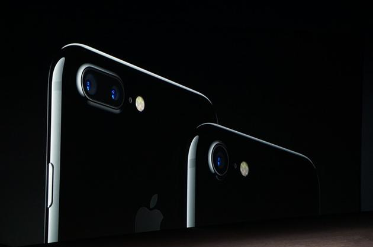

 关于iPhone7 plus的摄像头。双摄像头，都是1200万像素，新增长的镜头是广角镜头。也就是说，一个广角一个长焦。这等于端着俩相机拍同一个东西。之后算法合成，让它又同时有两种优势。具体效果上，可以很好地实现背景虚化，通过API芯片可以自动实现虚化，因为可以自动识别景深情况。 Home键是iPhone的核心功能区，iPhone 7对它进行了重新设计。像苹果在MacBook触摸板上所作的事情一样，iPhone 7的Home键加入了压力感应具备3D Touch功能。 iPhone 7和iPhone 7 Plus具备防水防尘功能。 ISP图像处理方面，iPhone 7可以通过算法了解拍摄对象的更多信息并对成像进行深度处理。摄影师评价：在弱光情况下， iPhone 7的色彩还原度更好。 前置700万像素摄像头，自拍更稳定。 关于苹果发布会 苹果2016年秋季发布会将在北京时间9月8日凌晨1点正式举行。本次新浪科技在手机端、电脑端同时呈现，现场一手资料、双语直播、“小林志玲陪你看科晚”等内容。想观看不一样的苹果发布会？想与美女主播一起共赏本次盛会？敬请关注新浪科技2016苹果秋季发布会报道专题。